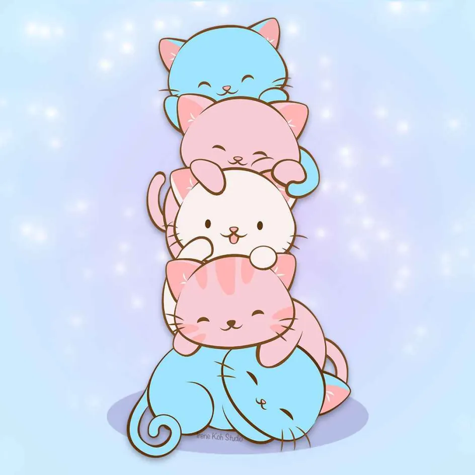

Group Meowing
20-07-2025
 hi :3
Group meowing este o comunitate de persoane trans feminine și nonbinare cu o ideologie politică de stânga. După mai multe încercări, am ajuns la concluzia că pentru a putea avea o comunitate sigură și unită, este necesar să avem niște credințe similare, un set de valori comune pe care să le putem folosi pentru a ajunge la un numitor comun.
Suntem o comunitate privată de discord, unde oferim un spațiu sigur pentru persoanele transfem și nonbinare din România, și vrem să ne implicăm și mai activ în a sprijini comunitatea trans din România.
Unul din felurile în care dorim să facem asta este prin acest website, unde dorim să publicăm diverse articole de interes general pentru comunitatea noastră.
Dacă ești o persoană transfemme sau nonbinară și vrei să vorbești cu
noi, să ne pui întrebări sau să te alături comunității noastre, te rog
să ne scrii pe email la
contact <a-rond> group <liniuță> meowing <punct> ro
sau pe instagram, la @groupmeowing.